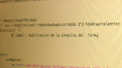

Caso práctico

Tras analizar distintas arquitecturas de programación web, Juan y su equipo comprueban que una de las decisiones más importantes antes de ponerse manos a la obra es el lenguaje de programación que utilizarán en el desarrollo.
Además de la sintaxis propia de cada lenguaje, la elección de uno u otro afecta a la complejidad del proyecto, a las herramientas que tendrán que utilizar, e incluso a la forma en que tendrán que programar la aplicación web.
Juan propone utilizar el lenguaje PHP, que ya conoce, pero no sin antes estudiar las ventajas y desventajas que les supondría con respecto a la utilización de otras alternativas.